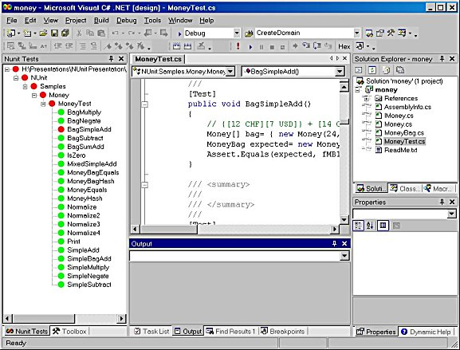

VSUnit
VSUnit is my own project aiming at a true integration of unit testing into Visual Studio. It's based on the NUnit framework but provides a Visual Studio AddIn as a front end.
Running tests under Visual Studio is more than just a cosmetic feature. It will enable going directly from the test tree to the code, generating tests as needed, counting asserts, etc.
The image below is the result of an initial spike to determine whether the NUnit tree view could be hosted in a tool window. I also wanted to see if tests could be loaded by an AddIn. Both turned out to be possible, at least after a little tweaking.

More to come!